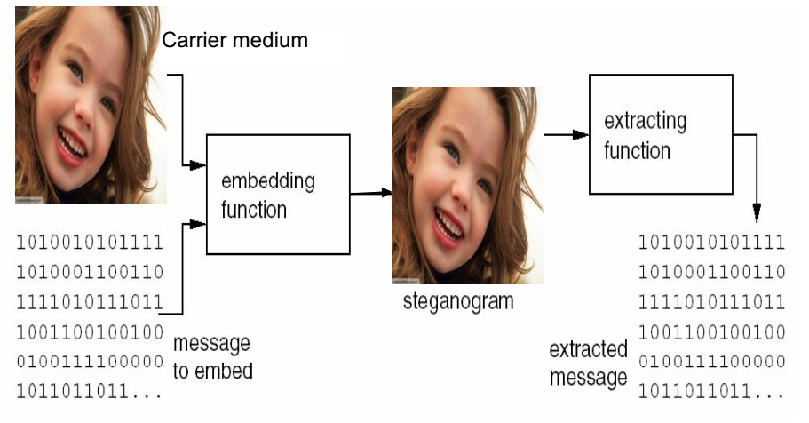

Uma Análise Comparativa de Ferramentas de Esteganálise em Estego-Imagens com Texto Embutido
Autor: Lucas Caetano Possatti
Orientadora: Profª. Drª. Karin Satie Komati
Coorientador: Prof. Dr. Jefferson Oliveira Andrade
Esteganografia
Ferramentas e métodos
Esteganografia
- Steghide
- Outguess
- F5
- Stepic
- LSBSteg
Esteganálise
- Chi Square
- RS Analysis
- Primary Sets
- Sample Pair
- StegExpose
Esteganografia LSB
Ferramentas
- Stepic
- LSBSteg
Conceito
- Least Significant Bit (LSB)
- 10011100
- Variações:
- Usar os outros planos de bit.
- LSB não-sequencial.
Chi Square

RS Analysis
- Detecta embutimento não-sequencial.
- Criação de grupos disjuntos de píxeis adjacentes
- Grupos regulares, singulares, ou inutilizáveis.
RS Analysis

Ambiente de Testes

LSBSteg

Stepic

Steghide

Outguess

F5

Testes do StegExpose